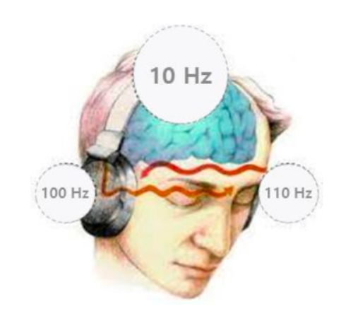

실제 활용 방법
바이노럴 비트(Binaural Beat)의 원리

뇌파 동조(Brain Entrainment)
특정 외부 주파수 자극이 뇌파와 동일한 주파수로 동조되는 현상을 의미합니다. 이를 통해 외부 음향을 사용하여 뇌파 상태를 인위적으로 조절할 수 있습니다.
바이노럴 비트(BB) 정의
서로 다른 주파수의 소리를 각 귀에 동시에 제시했을 때, 두 주파수의 차이로 인지되는 소리를 말한다.
- 예: 왼쪽 귀 220Hz, 오른쪽 귀 228Hz → 차이 8Hz의 바이노럴 비트 생성 → 뇌파 8Hz(알파파 영역) 동조
220Hz 들어보기
228Hz 들어보기
효과
- 뇌파가 목표 주파수 영역으로 들어가면서 정신적 안정감과 심신 이완 유도
- 2~11Hz 범위의 명상적 뇌파 유도 가능 → “Meditation beat”
- 비가청 주파수(1~20Hz)도 뇌는 공명 가능 → 알파파, 세타파 등 다양한 뇌파 동조
과학적 배경
- 1839년 H. W. Dove → 바이노럴 비트 최초 등록
- Oster(1973) → 원리 상세 설명
- Walter 연구 → 특정 주파수 자극 시 피험자 뇌파 동조 관찰
응용 가능성
- 심신 안정, 명상, 수면 유도
- 통합의학(보완대체의료)에서 중재적 역할 가능
- Brain-Sync 프로세스: 주파수 패턴을 활용해 선별적 자각 능력 구조화
이처럼 바이노럴 비트는 외부 음향으로 뇌파를 목표 주파수로 동기화시켜, 명상, 수면, 심신 안정과 같은 다양한 효과를 유도할 수 있는 기술입니다.